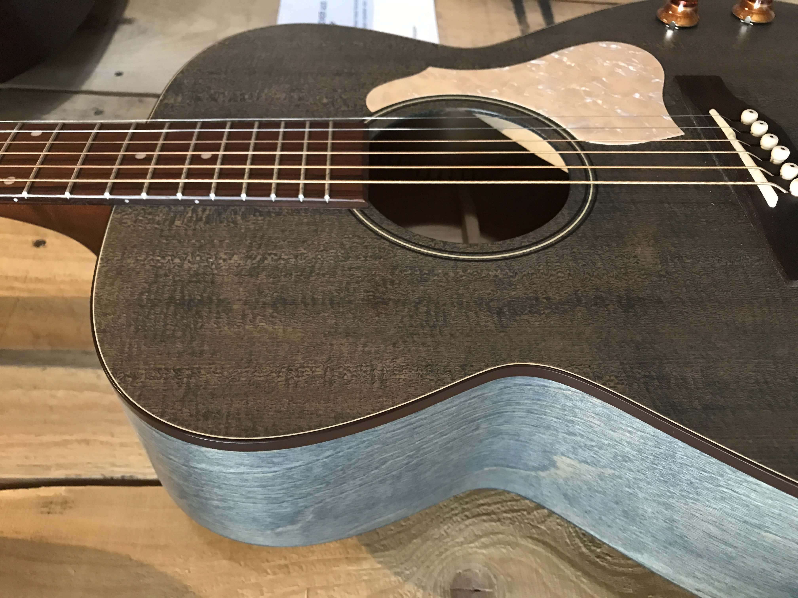
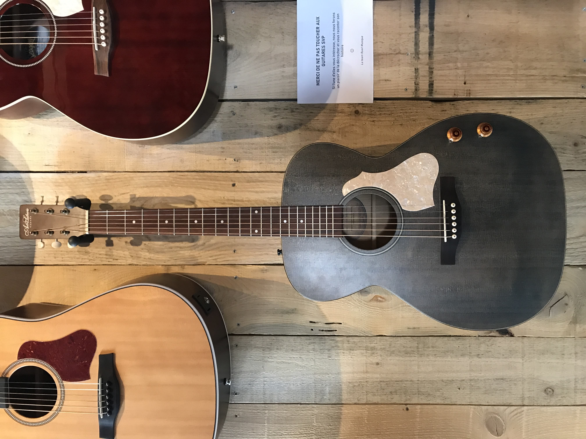
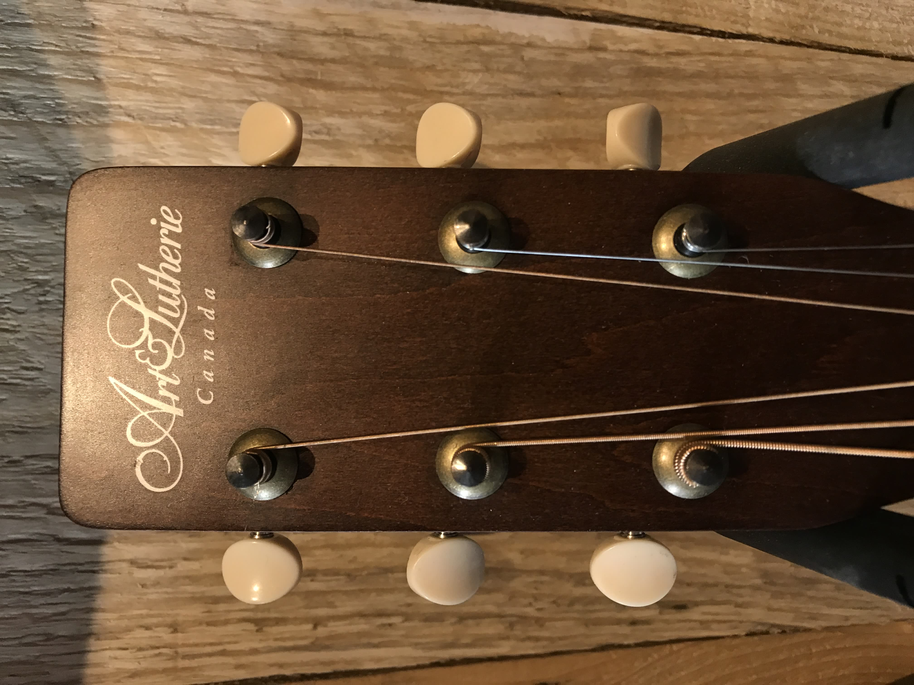

Guitares acoustiques
Découvrez notre collection de guitares acoustiques, triées par marque.
Martin

000-42
** Made in USA ** Guitare acoustique finition naturelle vernis brillant. Table en épicéa Sitka massif. Dos et éclisses en palissandre indien massif. Touche et chevalet en ébène. Mécaniques or. Fournie avec étui Martin.
D-18
** Made in USA ** Guitare acoustique finition naturelle vernis brillant. Table en épicéa massif. Dos, éclisses et manche en acajou massif. Touche et chevalet en ébène. Mécaniques chrome Martin. Plaque écaille. Fournie avec étui Martin.
D-28
** Made in USA ** Guitare acoustique finition naturelle vernis brillant. Table en épicéa massif. Dos et éclisses en palissandre indien massif. Manche en acajou. Touche et chevalet en ébène. Mécaniques chrome Grover. Plaque noire.Fournie avec étui Martin.
Seagull
Legacy Blue Q Discrete
Texte à propos des guitares acoustiques, dire à quel point elles sont géniales.
Art & Lutherie

Legacy Blue Q Discrete
Faite à la main aux ateliers Godin, cette guitare électro-acoustique au format concert hall mêle confort et esthétique avec son teint bleu satin !
Son format Concert Hall n’empêche pas d’avoir un son puissant, bien au contraire ! 😵
Pour ce faire, table en épicéa massif, fond et éclisses en merisier, et touche & chevalet en palissandre permettent de projeter le son des cordes 🪵
Enfin, on retrouve deux potentiomètres : Volume et Tone

Legacy Blue Q Discrete
Texte à propos des guitares acoustiques, dire à quel point elles sont géniales.
Legacy Blue Q Discrete
Texte à propos des guitares acoustiques, dire à quel point elles sont géniales.
Guild
Legacy Blue Q Discrete
Texte à propos des guitares acoustiques, dire à quel point elles sont géniales.
Bromo
Legacy Blue Q Discrete
Texte à propos des guitares acoustiques, dire à quel point elles sont géniales.